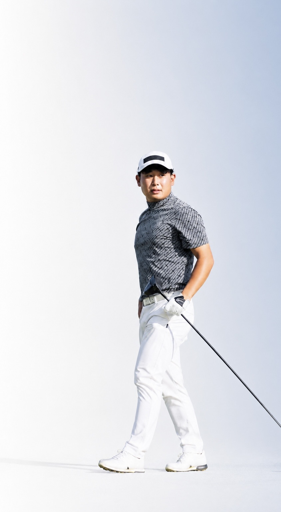

情報を増やすのではなく、迷いを減らす。
現役プロゴルファーが、あなたに必要な判断だけを届けます。
「なるほど。」でも、また元に戻ってしまう…
同じ「右に行く」ミスでも、その原因は人によって違います。あなたの身体や動きから“本当の原因”を一緒に見つけ、必要な一手だけを届けます。
気になる動きやミスの動画、お悩みをお送りください。
いただいた情報から、原因の仮説をお伝えします。
疑問や違和感、気づいたことを教えてください。
やり取りの中で理解を深め、再現性のある改善へ導きます。
自分で考え、判断し、改善できる力を育てます。
対面でしかできないことがあります。
オンラインの強みを活かします。
NearProは、スイングを“直す”サービスではありません。
原因を理解し、自分で改善できるようになるサービスです。
場所を選ばずスキマ時間で相談できる
48時間以内に順番に丁寧に返信
回数の制限なしで納得いくまで相談
やり取りはすべてLINEで完結・安心
現役プロゴルファー
情報があふれる時代に、自身も「何が正しいのか」で遠回りをした経験を持つ現役プロ。だからこそ、たくさん教えるのではなく“あなたに必要なことだけ”を届けることを大切にしています。スイングだけでなく、身体の使い方や考え方まで、チャットで一人ひとりに寄り添います。
ボタンから友だち追加するだけ。アプリのインストールは不要です。
スイングの動画やお悩みを送るだけ。現役プロゴルファーがあなた専用に回答します。
「今やるべきこと」が明確に。必要なことだけに集中して上達できます。
※ ボタンから友だち追加でスタート。いつでも解約できます。